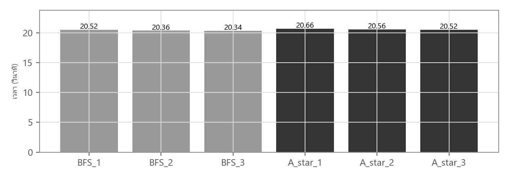
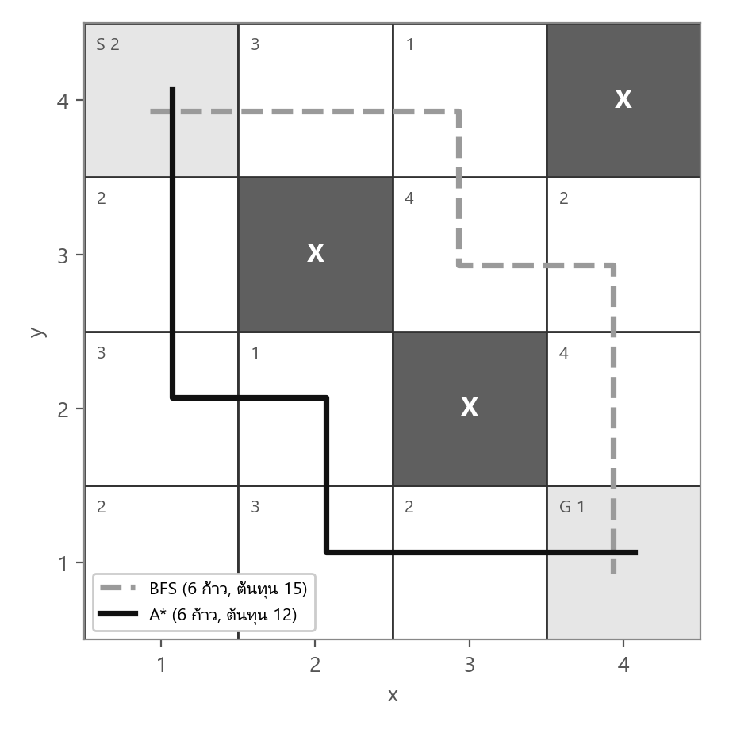
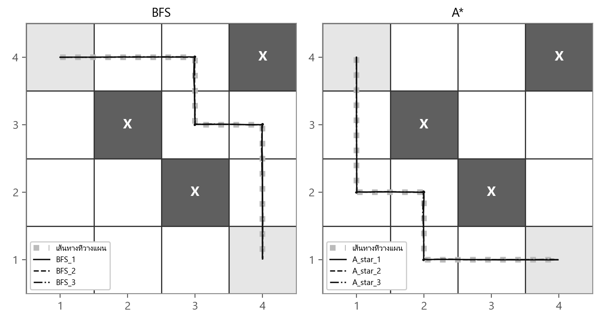
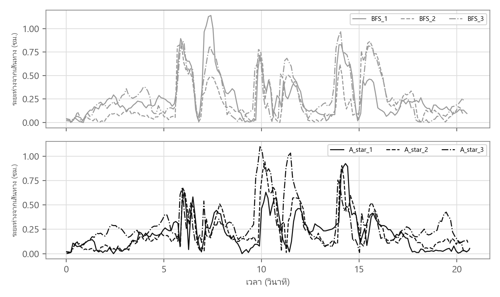
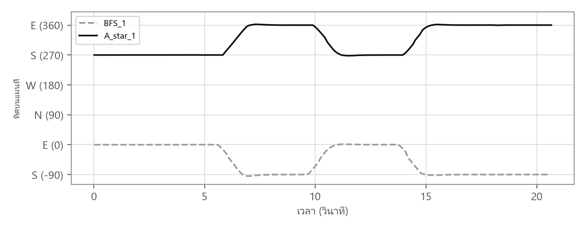
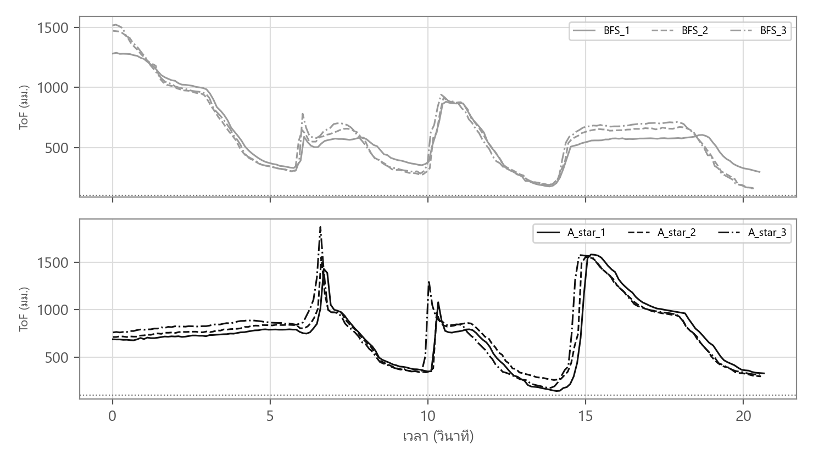

Shortest Path Finding with BFS and A* on a Weighted 4×4 Grid using DJI RoboMaster EP
การทดลองวางแผนเส้นทางบนสนามกริด 4×4 ที่มีสิ่งกีดขวางและต้นทุนต่อช่อง เปรียบเทียบอัลกอริทึม BFS กับ A* ทั้งในเชิงแผน (จำนวนก้าว ต้นทุนรวม จำนวนโหนดที่ขยาย) และในเชิงการเคลื่อนที่จริงของหุ่นยนต์ (เวลา ความคลาดเคลื่อน การชนสิ่งกีดขวาง และการถึงเป้าหมาย) จากการรันบนหุ่นยนต์จริง 6 รอบ
จัดทำโดย
| นาย ดาราชัย เดชะพันธุ์ | รหัสนักศึกษา 6810110109 |
| นาย ศุภกิตติ์ เชี่ยวหมอน | รหัสนักศึกษา 6810110354 |
| นาย ทวีรัตน์ ยอดเสถียร | รหัสนักศึกษา 6810110594 |
| นาย อาณัส อาเก๊ะ | รหัสนักศึกษา 6810110755 |
การทดลอง — Graph Search: Breadth-First Search และ A* Search
สาขาวิชาวิศวกรรมปัญญาประดิษฐ์ (AI Engineering)
คณะวิศวกรรมศาสตร์ มหาวิทยาลัยสงขลานครินทร์
กลุ่มโครงงาน: พบลาบไม่ทรายชื่อ (Phob_Labb_Mai_sarb_cheu)
หุ่นยนต์เคลื่อนที่ที่ทราบแผนที่ล่วงหน้าต้องเลือกเส้นทางจากจุดเริ่มต้นไปยังเป้าหมายก่อนเริ่มเคลื่อนที่ คำว่า “เส้นทางที่สั้นที่สุด” มีได้สองความหมาย คือเส้นทางที่ใช้จำนวนก้าวน้อยที่สุด และเส้นทางที่มีต้นทุนรวมน้อยที่สุด เมื่อทุกช่องมีต้นทุนเท่ากันสองความหมายนี้ให้ผลเหมือนกัน แต่เมื่อแต่ละช่องมีต้นทุนต่างกัน สองความหมายนี้อาจให้เส้นทางที่ต่างกันได้
การทดลองนี้ใช้อัลกอริทึม Breadth-First Search (BFS) ซึ่งรับประกันจำนวนก้าวน้อยที่สุด และอัลกอริทึม A* ซึ่งรับประกันต้นทุนรวมน้อยที่สุดเมื่อใช้ heuristic ที่ไม่ประเมินเกินจริง บนสนามกริด 4×4 ขนาดช่องละ 0.60 เมตร ที่มีสิ่งกีดขวาง 3 ช่องและมีต้นทุนกำกับทุกช่องตามใบงาน จากนั้นสั่ง DJI RoboMaster EP ให้เดินตามเส้นทางของแต่ละอัลกอริทึมจริง เพื่อดูว่าความแตกต่างในเชิงแผนส่งผลต่อการเคลื่อนที่จริงของหุ่นยนต์อย่างไร
รายงานฉบับนี้นำเสนอผลการรันบนหุ่นยนต์จริง (โหมด REAL ROBOT) จำนวน 6 รอบ แบ่งเป็น BFS 3 รอบ
(BFS_1 ถึง BFS_3) และ A* 3 รอบ (A_star_1 ถึง A_star_3) บันทึกระหว่างเวลา 10:26 ถึง 10:36 น. ของวันที่ 14 กันยายน 2569
ข้อมูลทุกรอบถูกบันทึกเป็นไฟล์ Jupyter notebook ในโฟลเดอร์ analyze/runs/ ด้วยปุ่ม SAVE RESULT ของโปรแกรม
ตำแหน่งของหุ่นยนต์ในรายงานมาจาก odometry ของล้อร่วมกับมุม yaw จาก IMU ของหุ่นยนต์เอง ไม่ได้วัดด้วยระบบอ้างอิงภายนอก เช่น กล้องเหนือสนามหรือตลับเมตร ค่าความคลาดเคลื่อนเชิงตำแหน่งทั้งหมดในรายงานจึงเป็น ค่าที่หุ่นยนต์ประมาณได้เอง ไม่ใช่ความคลาดเคลื่อนเทียบกับพื้นสนามจริง
ตารางที่ 1 รายการอุปกรณ์และซอฟต์แวร์ที่ใช้ในการทดลอง
| รายการ | รายละเอียดและหน้าที่ |
|---|---|
| DJI RoboMaster EP | หุ่นยนต์ฐานล้อ mecanum ถอดชุด gripper ออกและติดตั้ง gimbal แทน ใช้เป็นตัวกระทำในสนามจริง |
| เซนเซอร์ ToF บน gimbal | วัดระยะด้านหน้า ตั้ง gimbal เป็นโหมด chassis-lead และ recenter ก่อนเริ่ม เพื่อให้ ToF หันตามตัวรถ |
| คอมพิวเตอร์โน้ตบุ๊ก | Python 3.8 เชื่อมต่อ Wi-Fi ของหุ่นยนต์ (โหมด AP) ใช้รันอัลกอริทึม ควบคุม และบันทึกข้อมูล |
| ซอฟต์แวร์ | RoboMaster Python SDK, pygame 2.6.1 (หน้าจอควบคุม), numpy และ matplotlib (บันทึกและพล็อตผล) |
| เทปกระดาษและตลับเมตร | ตีเส้นตารางกริด 4×4 ช่องละ 0.60 เมตร |
| ป้ายสัญลักษณ์และกล่องสิ่งกีดขวาง | ระบุจุดเริ่มต้น S เป้าหมาย G และช่องสิ่งกีดขวางบนสนาม |
| พื้นที่ราบโล่ง | ขนาดอย่างน้อย 2.4×2.4 เมตร ปราศจากคนในสนามระหว่างการรัน |
สนามทดลองเป็นตารางกริด 4×4 อ้างอิงพิกัดในรูป (x, y) ตามใบงาน โดย x เพิ่มไปทางขวาและ y เพิ่มขึ้นด้านบน หุ่นยนต์เริ่มที่ S = (1, 4) เป้าหมายคือ G = (4, 1) และมีสิ่งกีดขวางที่ (4, 4), (2, 3) และ (3, 2) ตัวเลขในแต่ละช่องคือต้นทุนของการเข้าสู่ช่องนั้น หุ่นยนต์เคลื่อนที่ได้ 4 ทิศ คือ E, S, W และ N ครั้งละหนึ่งช่อง และหมุนตัวให้หันไปทางทิศที่จะเคลื่อนที่ก่อนเดินหน้าทุกครั้ง
| 4 | S 2 | 3 | 1 | X |
|---|---|---|---|---|
| 3 | 2 | X | 4 | 2 |
| 2 | 3 | 1 | X | 4 |
| 1 | 2 | 3 | 2 | G 1 |
| 1 | 2 | 3 | 4 |
รูปที่ 1 ผังสนามกริด 4×4 พร้อมต้นทุนต่อช่อง จุดเริ่มต้น S = (1, 4) เป้าหมาย G = (4, 1)
และสิ่งกีดขวาง X ที่ (4, 4), (2, 3) และ (3, 2)
ตารางที่ 2 โครงสร้างต้นทุนและเหตุผลเชิงออกแบบ
| เหตุการณ์ | ต้นทุน | เหตุผลเชิงออกแบบ |
|---|---|---|
| เข้าสู่ช่องว่างทั่วไป | 1 – 4 | จ่ายต้นทุนตามตัวเลขที่กำกับไว้ในช่องปลายทาง |
| อยู่ที่จุดเริ่มต้น S | ไม่นับ | ช่อง S กำกับค่า 2 แต่หุ่นยนต์อยู่ในช่องนี้ตั้งแต่ต้น จึงไม่มีการเข้าสู่ช่อง |
| เข้าสู่เป้าหมาย G | 1 | จ่ายต้นทุนของช่อง G และจบการค้นหาทันที |
| เข้าสู่ช่องสิ่งกีดขวางหรือออกนอกสนาม | — | ไม่มีเส้นเชื่อมในกราฟ อัลกอริทึมจึงเลือกไม่ได้ |
ต้นทุนของเส้นทางคือผลรวมของต้นทุนช่องที่เข้าไปหลังออกจาก S ระยะ Manhattan จาก S ไป G เท่ากับ 6 ก้าว และสิ่งกีดขวางไม่ได้บังคับให้อ้อม เส้นทางที่ใช้จำนวนก้าวน้อยที่สุดจึงยาว 6 ก้าว ส่วนต้นทุนต่ำสุดที่เป็นไปได้คือ 12 ซึ่งได้จากเส้นทางที่ A* เลือก สิ่งกีดขวางที่ (2, 3) และ (3, 2) แบ่งสนามออกเป็นทางเลือกด้านบนขวาและด้านล่างซ้าย ซึ่งยาวเท่ากันแต่มีต้นทุนต่างกัน
ตารางที่ 3 องค์ประกอบของกราฟในการทดลองนี้
| องค์ประกอบ | นิยามในการทดลองนี้ |
|---|---|
| โหนด (Node) | ช่องที่ไม่ใช่สิ่งกีดขวาง รวม 13 โหนด (16 ช่อง หักสิ่งกีดขวาง 3 ช่อง) |
| เส้นเชื่อม (Edge) | เชื่อมช่องที่ติดกันใน 4 ทิศ E, S, W, N โดยไม่มีการเดินแนวทแยง |
| น้ำหนักเส้นเชื่อม | w(u, v) = cost(v) คือต้นทุนของช่องปลายทาง กราฟจึงเป็นกราฟมีทิศทาง เพราะ w(u, v) ≠ w(v, u) ได้ |
| จุดเริ่มต้นและเป้าหมาย | S = (1, 4) และ G = (4, 1) |
BFS ขยายโหนดทีละระดับความลึกด้วยคิวแบบเข้าก่อนออกก่อน (FIFO) โหนดที่อยู่ห่างจาก S หนึ่งก้าวจะถูกขยายทั้งหมด ก่อนโหนดที่ห่างสองก้าว เมื่อพบ G ครั้งแรกจึงรับประกันว่าเป็นเส้นทางที่มีจำนวนเส้นเชื่อมน้อยที่สุด แต่ BFS ไม่ใช้น้ำหนักเส้นเชื่อมเลย เมื่อมีหลายเส้นทางที่ยาวเท่ากัน เส้นทางที่ได้จึงขึ้นกับลำดับการเพิ่มเพื่อนบ้านเข้าคิว ซึ่งโปรแกรมกำหนดเป็นลำดับคงที่ E, S, W, N
A* เลือกขยายโหนดที่มีค่าประเมิน f(n) ต่ำที่สุดจาก priority queue โดย
f(n) = g(n) + h(n) h(n) = ( |x − xG| + |y − yG| ) × cmin, cmin = min cost = 1
g(n) คือต้นทุนจริงสะสมจาก S ถึง n และ h(n) คือค่าประมาณต้นทุนที่เหลือถึง G ทุกก้าวมีต้นทุนอย่างน้อย cmin และต้องใช้อย่างน้อยเท่ากับระยะ Manhattan จึงไม่มีทางไปถึง G ด้วยต้นทุนต่ำกว่า h(n) heuristic นี้จึงไม่ประเมินเกินจริง (admissible) และสอดคล้อง (consistent) เพราะหนึ่งก้าวลดค่า h ได้ไม่เกิน cmin ขณะที่จ่ายต้นทุนอย่างน้อย cmin ผลคือเมื่อ G ถูกดึงออกจากคิวครั้งแรก เส้นทางนั้นมีต้นทุนต่ำสุดแน่นอน ในกรณีที่ค่า f เท่ากัน โปรแกรมเลือกโหนดที่มีค่า g ต่ำกว่าก่อน
BFS เหมาะสมที่สุดเฉพาะเมื่อทุกเส้นเชื่อมมีน้ำหนักเท่ากัน ส่วน A* ใช้ทั้งต้นทุนจริง g และค่าประมาณ h ถ้ากำหนด h(n) = 0 A* จะกลายเป็น Dijkstra ซึ่งยังให้ต้นทุนต่ำสุดแต่ขยายโหนดมากกว่า ค่า h ที่ดีช่วยให้ A* ข้ามโหนดที่มี f สูงกว่าต้นทุนของคำตอบได้ บนสนามนี้ทั้งสองอัลกอริทึมให้เส้นทาง 6 ก้าวเท่ากัน แต่ต้นทุนต่างกัน จึงเป็นกรณีที่แยกความหมายของ “สั้นที่สุด” สองแบบออกจากกันได้ชัดเจน
ตารางที่ 4 ผลของพารามิเตอร์แต่ละตัวต่อพฤติกรรมของระบบ
| พารามิเตอร์ | ค่าที่ใช้ | ผลต่อผลลัพธ์ |
|---|---|---|
| cmin ใน h(n) | 1 | ค่าที่มากกว่าต้นทุนต่ำสุดจริงทำให้ h ประเมินเกินจริง A* อาจไม่ได้ต้นทุนต่ำสุด |
| ลำดับเพื่อนบ้าน | E, S, W, N | กำหนดว่า BFS จะเลือกเส้นทางใดเมื่อมีหลายเส้นทางยาวเท่ากัน |
| cell_m | 0.60 ม. | ระยะจริงของหนึ่งช่อง ใช้แปลงตำแหน่ง odometry เป็นพิกัดช่อง |
| max_speed | 0.35 ม./วินาที | ความเร็วเดินหน้าสูงสุด กำหนดเวลาที่ใช้ต่อหนึ่งช่อง |
| turn_speed | 90 °/วินาที | ความเร็วเชิงมุมสูงสุดขณะหมุนตัว |
| TURN_TOL / POS_TOL | 2° / 1 ซม. | เกณฑ์ว่าการหมุนหรือการเดินหนึ่งช่องเสร็จแล้ว ค่าเล็กแม่นกว่าแต่ใช้เวลานานกว่า |
| HIT_TOF_MM | 100 มม. | ระยะ ToF ที่ต่ำกว่านี้ถือว่าชนสิ่งกีดขวาง |
ส่วนค้นหาเส้นทาง ส่วนควบคุมหุ่นยนต์ และหน้าจอ pygame อยู่ในไฟล์ src/cost_map_panel.py ส่วนบันทึกผลเป็น notebook อยู่ในไฟล์ src/run_notebook.py องค์ประกอบหลักแบ่งได้ดังตารางที่ 5
ตารางที่ 5 องค์ประกอบหลักของโปรแกรมและหน้าที่
| องค์ประกอบ | หน้าที่ |
|---|---|
bfs / astar | ค้นหาเส้นทางบนแผนที่ คืนค่าเส้นทางและลำดับโหนดที่ขยาย |
path_cost | รวมต้นทุนของช่องที่เข้าไปหลังออกจาก S |
SimRobot | หุ่นยนต์จำลองเชิงจลนศาสตร์ ใช้ตรวจสอบโปรแกรมก่อนสั่งหุ่นยนต์จริง |
RealRobot | เชื่อมกับ SDK จริง อ่านตำแหน่ง มุม yaw มุม gimbal และ ToF แล้วสั่ง chassis.drive_speed |
PathRunner | เดินตามเส้นทางทีละช่องแบบ closed-loop หมุนตัวเข้าทิศก่อนแล้วจึงเดินหน้า |
App | หน้าจอ pygame แสดงแผนที่ เส้นทาง ตำแหน่งสด แท็บ CALIBRATE และปุ่ม SAVE RESULT |
build_run | รวมข้อมูลรอบ คำนวณ planned steps, actual steps, time, hit obstacle และ reach goal |
run_notebook.save | บันทึกรอบเป็น notebook ตั้งชื่ออัตโนมัติ BFS_n หรือ A_star_n |
ตัวควบคุมทั้งสองชนิดมีเมท็อดเหมือนกัน คือ pose, drive, stop และ set_zero ทำให้ PathRunner ทำงานได้โดยไม่ต้องทราบว่ากำลังสั่งหุ่นยนต์จริงหรือตัวจำลอง การเดินแต่ละช่องแบ่งเป็นสองขั้น ขั้นแรกหมุนตัวจนทิศผิดพลาดน้อยกว่า 2 องศา ขั้นที่สองเดินหน้าด้วยตัวควบคุมแบบสัดส่วนจากระยะที่เหลือ พร้อมแก้ระยะด้านข้างและทิศทางไปพร้อมกัน จนระยะที่เหลือน้อยกว่า 1 เซนติเมตร คำสั่งความเร็วทุกครั้งกำหนด timeout 0.5 วินาที หากลูปควบคุมหยุดทำงาน หุ่นยนต์จะหยุดเอง
along = (dx·cos h + dy·sin h) · cell_m # ระยะที่เหลือตามทิศเดิน
lateral = (dx·sin h − dy·cos h) · cell_m # ระยะเบี่ยงด้านข้าง
robot.drive(clamp(1.5·along, 0.05, max_speed),
clamp(1.5·lateral, −0.1, 0.1),
clamp(2.0·wrap(h − heading), −30, 30))
# RealRobot: chassis.drive_speed(x, y·y_sign, z·z_sign, timeout=0.5)
ตัวอย่างที่ 1 การคำนวณคำสั่งความเร็วขณะเดินหนึ่งช่องใน PathRunner._forward
ค่าทั้งหมดปรับได้จากแท็บ CALIBRATE ของหน้าจอ และบันทึกลงไฟล์ calibration_output/motion_calibration.json ค่าที่ใช้ในทั้ง 6 รอบถูกบันทึกไว้ในไฟล์ผลลัพธ์ของแต่ละรอบ
ตารางที่ 6 พารามิเตอร์ของโปรแกรมและค่าที่ใช้ในการทดลองนี้
| ตัวเลือก | ค่าที่ใช้ | ความหมาย |
|---|---|---|
| cell_m | 0.60 | ความกว้างของช่องกริดเป็นเมตร |
| start_heading | BFS: E / A*: S | ทิศที่หุ่นยนต์หันที่จุด S ตั้งให้ตรงกับทิศของก้าวแรกในแต่ละเส้นทาง |
| forward_scale | 1.000 | อัตราส่วนระยะ odometry ต่อระยะจริง |
| max_speed | 0.35 | ความเร็วเดินหน้าสูงสุด (ม./วินาที) |
| turn_speed | 90 | ความเร็วหมุนสูงสุด (°/วินาที) |
| z_sign | -1 | เครื่องหมายของคำสั่งหมุน ปรับจากการทดสอบ TEST LEFT 90 บนหุ่นยนต์จริง |
| yaw_sign / y_sign | +1 / +1 | เครื่องหมายของมุม yaw และแกน y |
| tof_offset_mm | 0 | ระยะเลนส์ ToF ห่างจากจุดศูนย์กลางตัวรถ |
ระหว่างการเดิน โปรแกรมบันทึกตำแหน่งทุก 0.1 วินาที (เฉลี่ยจริง 0.110 วินาทีต่อแถว) หนึ่งรอบมีประมาณ 187 แถว เมื่อจบรอบ โปรแกรมคำนวณตัวชี้วัดตามนิยามในตารางที่ 7 แล้วบันทึกทั้งหมดลงใน notebook
samples: t, x, y, yaw, mx, my, heading, tof
result : planned_steps, actual_steps, time_s, hit_obstacle, reach_goal,
path_cost, final_cell, goal_error_m, travelled_m
ตัวอย่างที่ 2 คอลัมน์ข้อมูลรายแถวและตัวชี้วัดสรุปที่บันทึกในแต่ละรอบ
ตารางที่ 7 นิยามของตัวชี้วัดที่บันทึก
| ตัวชี้วัด | นิยาม |
|---|---|
| planned steps | จำนวนก้าวของเส้นทางที่อัลกอริทึมวางแผน |
| actual steps | จำนวนครั้งที่หุ่นยนต์เข้าสู่ช่องใหม่ นับเมื่อจุดศูนย์กลางอยู่ห่างกึ่งกลางช่องไม่เกิน 0.35 ช่อง (21 ซม.) ทั้งสองแกน |
| time (s) | เวลาจากการกด RUN จนจบการเดิน |
| hit obstacle | YES เมื่อจุดศูนย์กลางเข้าช่องสิ่งกีดขวางหรือออกนอกสนาม หรือ ToF อ่านได้ต่ำกว่า 100 มม. |
| reach goal | YES เมื่อ PathRunner จบด้วยสถานะ Done และช่องสุดท้ายที่เข้าคือ G |
| goal_error_m | ระยะจากตำแหน่งสุดท้ายถึงกึ่งกลางช่อง G ตาม odometry |
python main.py costmap --mode real python analyze/make_report.py
ตัวอย่างที่ 3 คำสั่งเปิดหน้าจอควบคุมหุ่นยนต์จริง และคำสั่งสร้างรายงานฉบับนี้
ตารางที่ 8 รอบการทดลองที่นำมาวิเคราะห์
| รอบ | อัลกอริทึม | โหมด | เวลาบันทึก | จำนวนแถวข้อมูล |
|---|---|---|---|---|
| BFS_1 | BFS | REAL | 2026-09-14 10:26:03 | 188 |
| BFS_2 | BFS | REAL | 2026-09-14 10:27:52 | 185 |
| BFS_3 | BFS | REAL | 2026-09-14 10:28:35 | 187 |
| A_star_1 | A* | REAL | 2026-09-14 10:35:18 | 189 |
| A_star_2 | A* | REAL | 2026-09-14 10:35:58 | 188 |
| A_star_3 | A* | REAL | 2026-09-14 10:36:52 | 187 |
ตารางที่ 9 ผลการรันบนหุ่นยนต์จริงทั้ง 6 รอบ
| รอบ | อัลกอริทึม | planned steps | actual steps | ต้นทุน | time (s) | hit obstacle | reach goal |
|---|---|---|---|---|---|---|---|
| BFS_1 | BFS | 6 | 6 | 15 | 20.52 | NO | YES |
| BFS_2 | BFS | 6 | 6 | 15 | 20.36 | NO | YES |
| BFS_3 | BFS | 6 | 6 | 15 | 20.34 | NO | YES |
| A_star_1 | A* | 6 | 6 | 12 | 20.66 | NO | YES |
| A_star_2 | A* | 6 | 6 | 12 | 20.56 | NO | YES |
| A_star_3 | A* | 6 | 6 | 12 | 20.52 | NO | YES |
หุ่นยนต์เดินถึงเป้าหมายครบทุกรอบใน 6 รอบ และไม่มีรอบใดตรวจพบการชนสิ่งกีดขวาง จำนวนก้าวจริงเท่ากับจำนวนก้าวที่วางแผนไว้ 6 ก้าวในทุกรอบ เวลาที่ใช้ของทุกรอบอยู่ในช่วง 20.34 ถึง 20.66 วินาที
ตารางที่ 10 เปรียบเทียบตัวชี้วัดของสองอัลกอริทึม (ค่าเฉลี่ย ± ส่วนเบี่ยงเบนมาตรฐาน จาก 3 รอบ)
| ตัวชี้วัด | BFS | A* | ความหมาย |
|---|---|---|---|
| จำนวนก้าวที่วางแผน | 6 | 6 | เท่ากัน |
| ต้นทุนรวมของเส้นทาง | 15 | 12 | A* ต่ำกว่า 3 (20%) |
| จำนวนโหนดที่ขยาย | 13 | 12 | จากโหนดทั้งหมด 13 โหนด |
| จำนวนครั้งที่หมุนตัว | 3 | 3 | นับจากทิศเริ่มต้นที่ S |
| อัตราการถึงเป้าหมาย | 3/3 | 3/3 | |
| เวลา (วินาที) | 20.41 ± 0.10 | 20.58 ± 0.07 | ต่างกัน 0.17 วินาที |
| ระยะทางที่เคลื่อนที่ (ม.) | 3.678 ± 0.009 | 3.672 ± 0.002 | เส้นทางอุดมคติ 3.60 ม. |
| ความคลาดเคลื่อนที่เป้าหมาย (ซม.) | 0.83 ± 0.15 | 0.93 ± 0.06 | ตาม odometry |
| ระยะห่างจากเส้นทางสูงสุด (ซม.) | 0.99 ± 0.14 | 0.99 ± 0.10 | ตาม odometry |
| ระยะห่างจากเส้นทาง RMS (ซม.) | 0.34 ± 0.03 | 0.31 ± 0.04 | ตาม odometry |
| ทิศผิดพลาดที่เป้าหมาย (องศา) | 0.21 ± 0.07 | 0.09 ± 0.06 | เทียบทิศหลักที่ใกล้ที่สุด |
ความแตกต่างเชิงแผนระหว่างสองอัลกอริทึมมีเพียงต้นทุนรวมและจำนวนโหนดที่ขยาย ส่วนตัวชี้วัดของการเคลื่อนที่จริงทุกตัวใกล้เคียงกันมาก เวลาเฉลี่ยของ A* (20.58 วินาที) ต่างจาก BFS (20.41 วินาที) เพียง 0.17 วินาที ซึ่งอยู่ในระดับเดียวกับความแปรปรวนระหว่างรอบของอัลกอริทึมเดียวกัน

รูปที่ 2 เวลาที่ใช้ของแต่ละรอบ (สีเทา BFS สีเข้ม A*)

รูปที่ 3 เส้นทางที่วางแผนโดย BFS (เส้นประ) และ A* (เส้นทึบ) ตัวเลขมุมช่องคือต้นทุน
ตารางที่ 11 ลำดับการขยายโหนดของ BFS และ A*
| ลำดับ | BFS | A* |
|---|---|---|
| 1 | (1, 4) | (1, 4) |
| 2 | (2, 4) | (1, 3) |
| 3 | (1, 3) | (2, 4) |
| 4 | (3, 4) | (3, 4) |
| 5 | (1, 2) | (1, 2) |
| 6 | (3, 3) | (2, 2) |
| 7 | (2, 2) | (1, 1) |
| 8 | (1, 1) | (3, 3) |
| 9 | (4, 3) | (2, 1) |
| 10 | (2, 1) | (4, 3) |
| 11 | (4, 2) | (3, 1) |
| 12 | (3, 1) | (4, 1) |
| 13 | (4, 1) |
BFS ใช้เส้นทางด้านบนขวา (1, 4) → (2, 4) → (3, 4) → (3, 3) → (4, 3) → (4, 2) → (4, 1) เพราะลำดับเพื่อนบ้านเริ่มจากทิศ E ทำให้ช่อง (2, 4) เข้าคิวก่อน (1, 3) และสายของ (2, 4) ไปถึง G ก่อนในระดับความลึกที่ 6 ส่วน A* ใช้เส้นทางด้านล่างซ้าย (1, 4) → (1, 3) → (1, 2) → (2, 2) → (2, 1) → (3, 1) → (4, 1) ซึ่งผ่านช่องต้นทุน 1 ที่ (2, 2) และหลีกเลี่ยงช่องต้นทุน 4 ที่ (3, 3) และ (4, 2) BFS ขยายโหนดครบทั้ง 13 โหนด ส่วน A* ขยาย 12 โหนด โดยไม่ขยาย (4, 2) เพราะ f(4, 2) = 15 สูงกว่าต้นทุนของคำตอบ 12

รูปที่ 4 ตำแหน่งจริงของหุ่นยนต์ตาม odometry ทั้ง 6 รอบ ซ้อนทับเส้นทางที่วางแผน

รูปที่ 5 ระยะห่างของจุดศูนย์กลางหุ่นยนต์จากเส้นทางที่วางแผนตลอดการเดิน
จากรูปที่ 4 เส้นทางจริงทั้ง 6 รอบซ้อนทับเส้นทางที่วางแผนจนแยกไม่ออกที่มาตราส่วนของสนาม รูปที่ 5 แสดงว่าระยะห่างจากเส้นทางสูงสุดของทุกรอบไม่เกิน 1.14 เซนติเมตร (รอบ BFS_1) ค่าสูงสุดเกิดช่วงสั้น ๆ ขณะหุ่นยนต์หมุนตัวที่มุมเลี้ยว ซึ่งจุดศูนย์กลางของหุ่นยนต์ขยับเล็กน้อยระหว่างหมุน
ตารางที่ 12 เวลาที่ใช้ต่อหนึ่งก้าว นับจากถึงกึ่งกลางช่องก่อนหน้าถึงกึ่งกลางช่องถัดไป (วินาที, 3 รอบ)
| ก้าว | BFS: การเคลื่อนที่ | BFS: เวลา | A*: การเคลื่อนที่ | A*: เวลา |
|---|---|---|---|---|
| 1 | (1, 4) → (2, 4) (E) | 2.04 ± 0.05 | (1, 4) → (1, 3) (S) | 1.99 ± 0.01 |
| 2 | (2, 4) → (3, 4) (E) | 2.64 ± 0.02 | (1, 3) → (1, 2) (S) | 2.85 ± 0.12 |
| 3 | (3, 4) → (3, 3) (S, หมุน) | 4.07 ± 0.10 | (1, 2) → (2, 2) (E, หมุน) | 4.11 ± 0.08 |
| 4 | (3, 3) → (4, 3) (E, หมุน) | 4.09 ± 0.13 | (2, 2) → (2, 1) (S, หมุน) | 4.01 ± 0.10 |
| 5 | (4, 3) → (4, 2) (S, หมุน) | 4.04 ± 0.06 | (2, 1) → (3, 1) (E, หมุน) | 4.08 ± 0.12 |
| 6 | (4, 2) → (4, 1) (S) | 2.78 ± 0.07 | (3, 1) → (4, 1) (E) | 2.71 ± 0.12 |

รูปที่ 6 ทิศของหุ่นยนต์บนแผนที่ตลอดการเดิน รอบ BFS_1 และ A_star_1
ก้าวที่ต้องหมุนตัวก่อนเดินใช้เวลาเฉลี่ย 4.07 วินาที ส่วนก้าวที่เดินตรงโดยไม่หมุนใช้เวลาเฉลี่ย 2.75 วินาที การหมุนตัวหนึ่งครั้งจึงเพิ่มเวลาประมาณ 1.3 วินาที ทั้งสองเส้นทางมีการหมุนตัว 3 ครั้งเท่ากัน (รูปที่ 6) และมีจำนวนก้าวเท่ากัน เวลารวมจึงใกล้เคียงกัน ก้าวแรกใช้เวลาเฉลี่ยเพียง 2.02 วินาที เพราะเริ่มนับจากกึ่งกลางช่อง S ขณะที่ก้าวอื่นเริ่มนับตั้งแต่หุ่นยนต์เข้าใกล้กึ่งกลางช่องก่อนหน้าในระยะ 6 ซม. จึงรวมช่วงที่ตัวควบคุมลดความเร็วเข้ากึ่งกลางช่องไว้ด้วย

รูปที่ 7 ระยะที่อ่านได้จาก ToF บน gimbal ตลอดการเดิน เส้นประแนวนอนคือเกณฑ์การชน 100 มม.
ตารางที่ 13 ค่า ToF ที่จุดเริ่มต้น ค่าต่ำสุดระหว่างทาง และค่าที่เป้าหมาย (มม.)
| รอบ | เริ่มต้น | ต่ำสุด | ที่เป้าหมาย | ต่ำกว่าเกณฑ์ |
|---|---|---|---|---|
| BFS_1 | 1281 | 175 (t = 13.9 s ที่ (4, 3)) | 296 | NO |
| BFS_2 | 1470 | 156 (t = 20.4 s ที่ (4, 1)) | 156 | NO |
| BFS_3 | 1515 | 156 (t = 20.3 s ที่ (4, 1)) | 156 | NO |
| A_star_1 | 687 | 142 (t = 14.1 s ที่ (2, 1)) | 328 | NO |
| A_star_2 | 711 | 258 (t = 14.0 s ที่ (2, 1)) | 297 | NO |
| A_star_3 | 759 | 176 (t = 13.8 s ที่ (2, 1)) | 310 | NO |
ค่า ToF ต่ำสุดของทุกรอบอยู่ระหว่าง 142 ถึง 258 มม. สูงกว่าเกณฑ์การชน 100 มม. ทุกรอบ ที่เป้าหมาย รอบ A* ทั้งสามรอบหันทิศ E และอ่านได้ 328, 297, 310 มม. ส่วนรอบ BFS หันทิศ S และอ่านได้ 296, 156, 156 มม. ค่าที่เป้าหมายของ BFS_2 และ BFS_3 ต่ำกว่า BFS_1 อย่างชัดเจน แสดงว่ามีวัตถุอยู่ด้านหน้าหุ่นยนต์ใกล้กว่าในรอบนั้น ข้อมูลที่บันทึกไม่ระบุว่าวัตถุนั้นคืออะไร
เพื่อยืนยันว่าโปรแกรมคำนวณตามทฤษฎีในหัวข้อที่ 3 จริง จึงคำนวณต้นทุนเส้นทาง และลำดับการขยายโหนดของ A* ด้วยมือ แล้วเปรียบเทียบกับค่าที่โปรแกรมบันทึกไว้ในไฟล์ผลลัพธ์
BFS : cost(2,4) + cost(3,4) + cost(3,3) + cost(4,3) + cost(4,2) + cost(4,1)
= 3 + 1 + 4 + 2 + 4 + 1 = 15
A* : cost(1,3) + cost(1,2) + cost(2,2) + cost(2,1) + cost(3,1) + cost(4,1)
= 2 + 3 + 1 + 3 + 2 + 1 = 12
ค่า h ของแต่ละโหนดคือระยะ Manhattan ถึง (4, 1) คูณ 1 ค่า g คือผลรวมต้นทุนตามเส้นทางที่ดีที่สุดที่พบ ณ ขณะนั้น และโหนดถูกดึงออกจากคิวตามค่า f จากน้อยไปมาก หากค่า f เท่ากันจะเลือกค่า g ที่น้อยกว่าก่อน
ตารางที่ 14 ค่าที่คำนวณด้วยมือ เทียบกับลำดับการขยายที่โปรแกรมบันทึก
| ลำดับ | โหนด | มาจาก | g | h | f | โปรแกรม | ผล |
|---|---|---|---|---|---|---|---|
| 1 | (1, 4) | — | 0 | 6 | 6 | (1, 4) | ตรงกัน |
| 2 | (1, 3) | (1, 4) | 0 + 2 = 2 | 5 | 7 | (1, 3) | ตรงกัน |
| 3 | (2, 4) | (1, 4) | 0 + 3 = 3 | 5 | 8 | (2, 4) | ตรงกัน |
| 4 | (3, 4) | (2, 4) | 3 + 1 = 4 | 4 | 8 | (3, 4) | ตรงกัน |
| 5 | (1, 2) | (1, 3) | 2 + 3 = 5 | 4 | 9 | (1, 2) | ตรงกัน |
| 6 | (2, 2) | (1, 2) | 5 + 1 = 6 | 3 | 9 | (2, 2) | ตรงกัน |
| 7 | (1, 1) | (1, 2) | 5 + 2 = 7 | 3 | 10 | (1, 1) | ตรงกัน |
| 8 | (3, 3) | (3, 4) | 4 + 4 = 8 | 3 | 11 | (3, 3) | ตรงกัน |
| 9 | (2, 1) | (2, 2) | 6 + 3 = 9 | 2 | 11 | (2, 1) | ตรงกัน |
| 10 | (4, 3) | (3, 3) | 8 + 2 = 10 | 2 | 12 | (4, 3) | ตรงกัน |
| 11 | (3, 1) | (2, 1) | 9 + 2 = 11 | 1 | 12 | (3, 1) | ตรงกัน |
| 12 | (4, 1) | (3, 1) | 11 + 1 = 12 | 0 | 12 | (4, 1) | ตรงกัน |
ตารางที่ 15 เปรียบเทียบผลการคำนวณด้วยมือกับค่าที่โปรแกรมบันทึก
| ปริมาณ | คำนวณด้วยมือ | ค่าในไฟล์ผลลัพธ์ | ผลการตรวจสอบ |
|---|---|---|---|
| ต้นทุนเส้นทาง BFS | 15 | 15 | ตรงกัน |
| ต้นทุนเส้นทาง A* | 12 | 12 | ตรงกัน |
| จำนวนโหนดที่ A* ขยาย | 12 | 12 | ตรงกัน |
แถวสุดท้ายของรอบ A_star_1 บันทึกตำแหน่งบนแผนที่ (mx, my) = (3.9857, 1.0009) เมื่อปัดเป็นช่องได้ (4, 1) ซึ่งคือ G ความคลาดเคลื่อนที่เป้าหมายคำนวณได้ดังนี้
goal_error = √((4 − 3.9857)² + (1 − 1.0009)²) × 0.60
= 0.0086 m ≈ 0.009 m
ค่าที่โปรแกรมบันทึกคือ 0.009 เมตร ตรงกันเมื่อปัดเป็นทศนิยมสามตำแหน่ง
ทั้งสองอัลกอริทึมให้เส้นทาง 6 ก้าวซึ่งสั้นที่สุดในเชิงจำนวนก้าว แต่ต้นทุนของ BFS (15) สูงกว่า A* (12) ต้นทุนของ BFS เป็นผลจากลำดับการเพิ่มเพื่อนบ้าน ไม่ใช่ผลของการพิจารณาต้นทุน เมื่อทดลองสลับลำดับเพื่อนบ้านครบทั้ง 24 แบบ BFS ให้ต้นทุนเส้นทางที่เป็นไปได้ 13, 15 ขึ้นกับลำดับที่ใช้ ในขณะที่ A* ให้ต้นทุน 12 เสมอ ผลนี้ยืนยันว่าถ้าต้องการต้นทุนต่ำสุด ต้องใช้อัลกอริทึมที่นำต้นทุนมาคำนวณ เช่น A* หรือ Dijkstra
แม้ A* จะมีต้นทุนต่ำกว่า BFS ร้อยละ 20 แต่เวลาจริงแทบไม่ต่างกัน สาเหตุคือตัวเลขต้นทุนในใบงานเป็นค่าเชิงนามธรรม พื้นสนามทุกช่องเหมือนกัน หุ่นยนต์จึงใช้เวลาต่อช่องเท่ากันไม่ว่าต้นทุนจะเป็นเท่าใด เวลารวมขึ้นกับจำนวนก้าวและจำนวนครั้งที่หมุนตัว ซึ่งทั้งสองเส้นทางเท่ากันที่ 6 ก้าวและ 3 ครั้ง หากต้นทุนสะท้อนสิ่งที่วัดได้จริง เช่น พื้นผิวที่ต้องลดความเร็ว ความแตกต่างของต้นทุนจึงจะปรากฏในเวลาหรือพลังงานที่ใช้
ส่วนเบี่ยงเบนมาตรฐานของเวลาภายในอัลกอริทึมเดียวกันไม่เกิน 0.10 วินาที ความคลาดเคลื่อนที่เป้าหมายไม่เกิน 1.0 ซม. และทิศผิดพลาดที่เป้าหมายไม่เกิน 0.29 องศา ความสม่ำเสมอนี้มาจากการควบคุมแบบ closed-loop ที่ใช้ตำแหน่งและมุมที่วัดได้ในการตัดสินว่าแต่ละขั้นเสร็จแล้ว แทนการสั่งระยะทางแบบเปิดวง อย่างไรก็ตาม ค่าเหล่านี้วัดด้วย odometry เดียวกับที่ใช้ควบคุม จึงแสดงว่าตัวควบคุมพาหุ่นยนต์ไปถึงตำแหน่งที่ตัวเองเชื่อว่าเป็นเป้าหมาย แต่ไม่ได้พิสูจน์ว่าตำแหน่งจริงบนพื้นแม่นยำในระดับเดียวกัน
A* ขยายโหนดน้อยกว่า BFS เพียง 1 โหนด เพราะสนามมีเพียง 13 โหนด และค่า h ที่ใช้ cmin = 1 ต่ำกว่าต้นทุนเฉลี่ยจริงของแต่ละก้าว (2.31) ค่อนข้างมาก h จึงแยกโหนดที่ดีออกจากโหนดที่ไม่ดีได้ไม่ชัด ข้อได้เปรียบด้านจำนวนโหนดของ A* จะชัดขึ้นเมื่อสนามใหญ่ขึ้น หรือเมื่อ heuristic ใกล้เคียงต้นทุนจริงมากขึ้นโดยยังไม่ประเมินเกินจริง
การทดลองนี้แสดงให้เห็นว่าบนสนามกริด 4×4 ที่มีสิ่งกีดขวาง 3 ช่องและต้นทุนต่อช่อง BFS และ A* ให้เส้นทางที่สั้นที่สุดในเชิงจำนวนก้าวเท่ากันที่ 6 ก้าว แต่ A* ให้ต้นทุนรวม 12 ต่ำกว่า BFS ที่ 15 และขยายโหนดน้อยกว่า (12 เทียบกับ 13 โหนด) การคำนวณด้วยมือทั้งต้นทุนเส้นทางและลำดับการขยายโหนดของ A* ตรงกับค่าที่โปรแกรมบันทึกทุกตำแหน่ง ยืนยันความถูกต้องของการนำอัลกอริทึมไปใช้
บนหุ่นยนต์จริงทั้ง 6 รอบ หุ่นยนต์เดินถึงเป้าหมายครบทุกรอบโดยไม่ตรวจพบการชนสิ่งกีดขวาง จำนวนก้าวจริงเท่ากับจำนวนก้าวที่วางแผนทุกรอบ เวลาเฉลี่ยของ BFS คือ 20.41 วินาที และของ A* คือ 20.58 วินาที ซึ่งแทบไม่ต่างกัน เพราะทั้งสองเส้นทางมีจำนวนก้าวและจำนวนการหมุนตัวเท่ากัน ขณะที่ต้นทุนในใบงานไม่ได้สะท้อนความยากของพื้นสนามจริง
ข้อค้นพบสำคัญคือ การเลือกอัลกอริทึมต้องสอดคล้องกับความหมายของต้นทุน หากต้นทุนเป็นเพียงจำนวนก้าว BFS เพียงพอ แต่หากต้นทุนแทนสิ่งที่มีผลจริง เช่น เวลา พลังงาน หรือความเสี่ยง ต้องใช้ A* จึงจะรับประกันผลที่ดีที่สุด และควรรวมต้นทุนของการหมุนตัวไว้ในการค้นหาด้วย
ตารางที่ 16 ไฟล์ที่เกี่ยวข้องกับการทดลอง
| ไฟล์ | เนื้อหา |
|---|---|
analyze/runs/BFS_1–3.ipynb | ข้อมูลดิบ ตัวชี้วัด และกราฟของรอบ BFS ทั้ง 3 รอบ |
analyze/runs/A_star_1–3.ipynb | ข้อมูลดิบ ตัวชี้วัด และกราฟของรอบ A* ทั้ง 3 รอบ |
analyze/load_runs.py | อ่านข้อมูลทุกรอบกลับจาก notebook |
analyze/make_report.py | คำนวณตัวชี้วัด สร้างกราฟ และสร้างรายงานฉบับนี้ |
src/cost_map_panel.py | BFS, A*, ตัวควบคุมหุ่นยนต์ และหน้าจอ pygame |
src/run_notebook.py | บันทึกรอบการทดลองเป็น notebook |
calibration_output/motion_calibration.json | ค่าที่ตั้งจากแท็บ CALIBRATE |
ตัวเลขทุกค่าในรายงานคำนวณจากไฟล์ใน analyze/runs/ การสร้างรายงานซ้ำใช้คำสั่งเดียวในตัวอย่างที่ 3
และหากมีรอบใหม่ถูกบันทึกเพิ่ม รายงานจะรวมรอบนั้นโดยอัตโนมัติ
python main.py costmap # ทดสอบในโหมดจำลอง python tests/test_cost_map.py # ทดสอบ BFS, A*, การบันทึกผล
ตัวอย่างที่ 4 คำสั่งทดสอบโปรแกรมก่อนรันบนหุ่นยนต์จริง